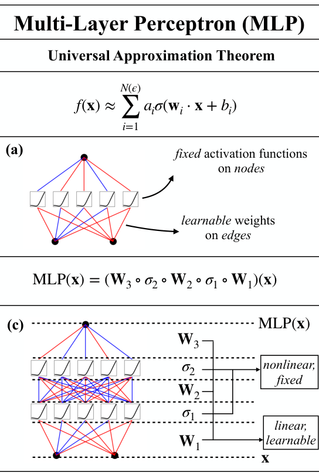
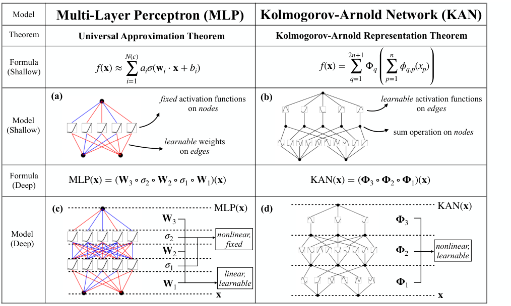
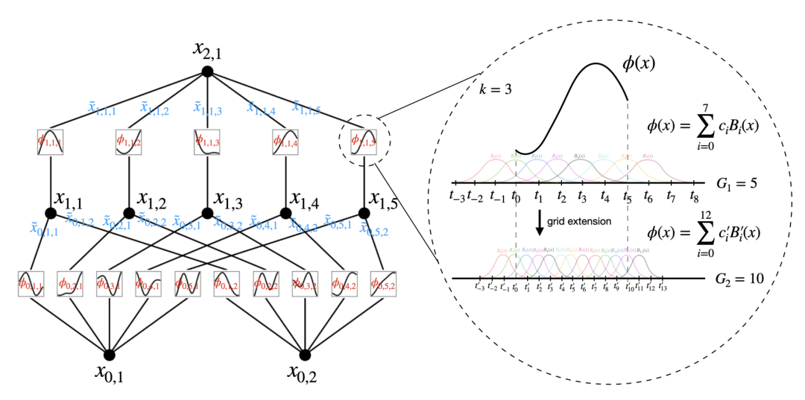
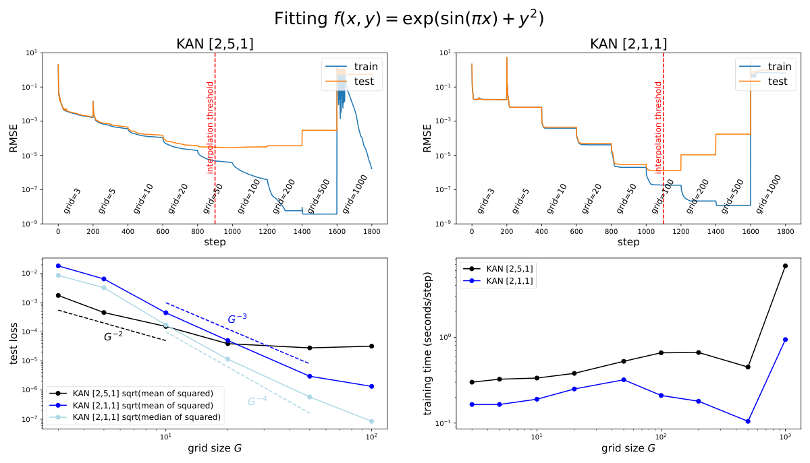
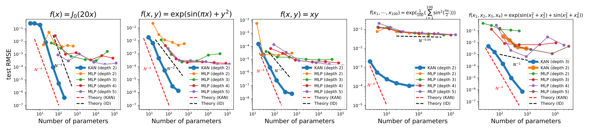
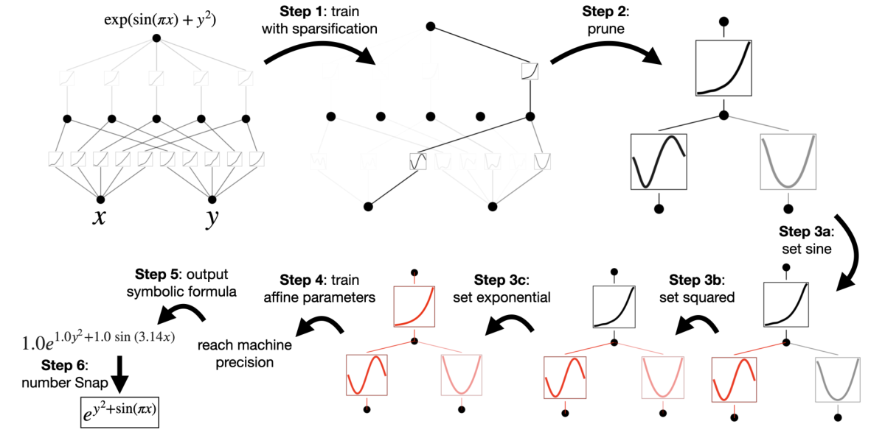
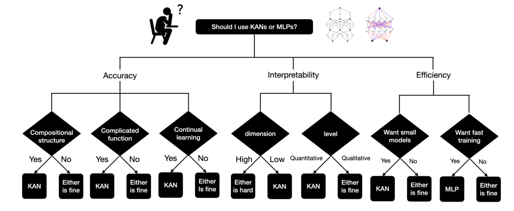

- A layer: learnable linear map W, then a fixed nonlinearity σ.
- Weights live on edges; activations sit on nodes.
- Backed by the universal approximation theorem.
- In transformers, MLPs hold almost all non-embedding parameters.

What if a neural network learned its activation functions instead of its weights?
Study deck on Liu et al. (2024), KAN: Kolmogorov–Arnold Networks
annotated-study-sheets · example · press N
MLPs and the KA theorem
Splines on the edges
Grids and scaling laws
Network → formula
What the authors admit

Liu et al. (2024), KAN, arXiv:2404.19756 — CC BY 4.0.
Any continuous f on a bounded domain, written with 1D functions and sums.

Liu et al. (2024), KAN, arXiv:2404.19756 — CC BY 4.0.

Liu et al. (2024), KAN, arXiv:2404.19756 — CC BY 4.0.

Liu et al. (2024), KAN, arXiv:2404.19756 — CC BY 4.0.

Liu et al. (2024), KAN, arXiv:2404.19756 — CC BY 4.0.

Liu et al. (2024), KAN, arXiv:2404.19756 — CC BY 4.0.

Liu et al. (2024), KAN, arXiv:2404.19756 — CC BY 4.0.
Figures in this deck: Liu et al. (2024), KAN, arXiv:2404.19756 — CC BY 4.0.